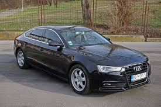
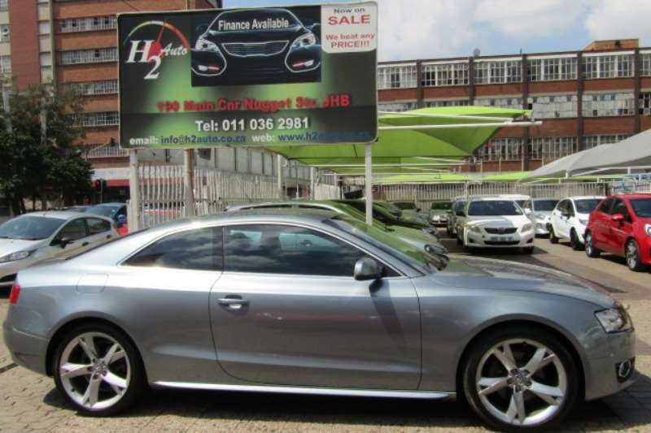
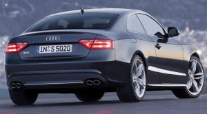

Audi A5
Audi A5 je serija kupe automobila koje proizvodi Nemacki automobilski proizvođac Audi. Prvi modeli ovog prestižnog automobila su se mogli videti od Marta 2007 godine kada je predstavljen. Audijeva interpretacija kupea sa petora vrata nije ostavila konkurente ravnodusnim šta više u Ingolstatu su iskoračili u tom pravcu nepune dve godine nakon što je na osnovi modela A4 predstavljen Audi A5 – klasičan kupe sa dvoja vrata. Audi Sportback koji je kreiran 2009 godine sa namerom da se u premijum srednjoj klasi ponudi nešto novo, drugacije i originalno. Cilj je bio izraditi kvalitetan, praktičan i dinamičan kupe sa petora vrata.
Prva generacija (2007 - 2016)
Audi A5 je obeležio Audijev povratak na tržiste luksuznih kupe automobila još od B3-B4 modela.Audi 80 koje je bazirani kupe model zavrsio je proizvodnju 1996 godine. Od maja 10. 2006 potvrđeno je da Audi A5 ide u proizvođnu.B6 /B7 A4 su izradili varijantu kabrioleta ali ne kupee varijantu modela. Audi A5 je odlucio da odvoji kabriolet zajedno sa novim kupeom i sa cetvoro vrata sportskim sedenom u varijantu svog Audi A5.
 Ovaj automobil je bio prvi od B8 Nemačke porodice automobila koji su izlazili u proizvodnju pored ostalih koji čine njegovu porodicu to su Audi A4 i Audi Q3 terenac. Ovi modeli su bili bazirani na Modularno uzdužnoj platformi na kojima ce biti i sledeća generacija A6 i modela A8.
Ovaj automobil je bio prvi od B8 Nemačke porodice automobila koji su izlazili u proizvodnju pored ostalih koji čine njegovu porodicu to su Audi A4 i Audi Q3 terenac. Ovi modeli su bili bazirani na Modularno uzdužnoj platformi na kojima ce biti i sledeća generacija A6 i modela A8.
A5 je treći model kupe varijante Audijevog parkinga prate ga druga generacija Audi TT modela i savršeni R8 model. Audi A5 je adaptirao dizajn elemenata Nuvolari koncepta automobila. Audi pokrece 3.2 litarski FSI V6 motor sa 195 KW ( 265 PS, 261 hp) .
Kupe model ( 8T3 )
Dizajn je baziran na Nuvolai konceptu automobila.Oba modela Audi A5 i Audi S5 kupe su pušteni i predstavljeni u Internacionalnom salonu u Ženevi i Melburnu 6. Marta 2007 godine.
Poručivanje modela A5 i S5 počelo je još od 6. marta 2007 a prvi primerci su dostavljeni vec u Junu 2007 godine. Prodajni modeli su uključivali u ponudu motore sa 3.2 FSI V6 motorom I 3.0 TDI dizel agregatom sa pogonom na sva četiri točka i šestostepenim menjačem, u ponudi je bio i malo slavili 1.8 TFSI motor.
Modeli koji su bili za Američko tržiste su obuhvatali A5 3.2 FSI pogon na sva četiri točka i S5 kupe sa 4.2 FSI motorom. Oba su bila uparena sa šestostepenim menjačima. U ponudi su bili manuelni i tiptronik automatski menjači. Model S5 je počeo sa prodajom tek u Novembru 2007 godine samo sa manuelnim menjačem dok su ljubitelji automatika dobili svoje ljubimce tek početkom leta 2008 godine.
Modeli koji su bili namenjeni za Kanadsko tržiste počeli su sa prodajom 2008 godine. Plasirani modeli su bili A5 3.2 FSI sa izborom šestostepenog manuelnog ili automatskog tiptronik menjača. Od početka 2011 godine dostupni su bili samo turbo 2.0 L motori za njihovo tržiste. Početkom 2013 Audi je predstavio i novu A5 crnu ogranicenu verziju.
S5 (2007- )
Audi S5 je predstavljen kao kupe verzija u isto vreme kao i model A5. U poređenju Audi S5 i A5 nudi se drugaciji izgled modela. Najviše se razlikuju modeli S i RS pored prvo izvedenih LED svetala kao i BI Xenona prednjih i zadnjih hromiranih delova.
Dizajn enterijera je sasvim korektan, sa logično pozicioniranom instrumentacijom i dostupnim komandama. Preglednost je slaba tačka, kao i kod većine novih automobila, mada sa preciznim uparkiravanjem nećete imati većih problema, posebno kada se uzme u obzir da je automobil na testu bio opremljen Audi Parking plus sistemom sa zvučnom signalizacijom.
U mnogim prodavnicama niste mogli videti Audi S5 model koji je imao manje točkove sa toliko niskoprofilnim gumama što je bilo dosta agresivnije nego kod predstavljenih modela A5 koji su dolazili sa manje ekskluzivnijim točkovima i detaljima.Pored toga imali su duplo vece sportska sedišta i dosta drugih sportskih detalja koji nisu imali modeli A5. Unapređenje je usledilo 2010 godine naprednim LED svetlima predstavili su model u drugacijem svetlu kao i ponuda sedišta presvucena u alkantara kozu. Pored slicnog izgelda oni nisu imali nikakvih slicnosti jer su u modelu Audi S5 ugrađivani nesvakidasnji motori S5 kupe 4.2 FSI V8 motor sa 260 kw i 350 ks i naravno 3.0 TFSI V6 motor koji je imao 245 kw 330 ks koji su delili i Audi S4 Sport 3.0 TFSI Quattro modeli sa pogonom na svim točkovima. Kupe je imao opciju šestostepenog menjača dok je kabriolet sportski imao sedmostepeni automatski menjač sa duplim kvacilom.
Sportback
Radi se o sportskom sportbek kupeu sa dvoje vrata koji je baziran na novoj "Audi A6" limuzini. Glavne razlike, po rečima dizajnera, jeste novi nos, farovi su nešto viši,Audi A4 ima oštrije ivice dok je kod A5 emocija izraženija.
Audi A5 Sportback je model namenjen evropskom tržištu, a verzija koja je najpoznatija je sa dvolitarskim TDI motorom koja je, “idealna” za kupce sa Starog kontinenta. Ona sjedinjuje eleganciju kupea, komfort limuzine i praktičnost Avanta. Prednji deo od nosa do A stuba je identičan sa A5 kupeom, dok je “ostatak” potpuno nov. Mada je zadržana kupe forma zahvaljujući padajućoj liniji krova, i atraktivnom profilu, dodavanje dvoje vrata jasno naglašava da se radi o automobilu koji je predviđen prvenstveno za porodicu, odnosno, vožnju više putnika.
Godišta proizvodnje modela
| Model | Kupe | Kabriolet | Sportbek |
|---|---|---|---|
| A5 1.8 TFSI (118 kW) | 2009 - | 2009 - | 2009 - |
| A5 1.8 TFSI (125 kW) | 2007- 2008 | - | - |
| A5 1.8 TFSI (130 kW) | 2012-2016 | - | 2016 - |
| A5 2.0 TFSI (132 kW) | 2008–2011 | 2009–2011 | 2009–2011 |
| A5 2.0 TFSI (155 kW) quattro | 2008– | 2009– | 2009– |
| A5 3.0 TFSI quattro | 2012– | 2009– | 2009– |
| A5 3.2 FSI | 2007–2011 | 2009–2011 | 2009–2011 |
| S5 4.2 FSI quattro | 2007-2012 | - | - |
| RS5 4.2 FSI quattro | 2010 - | 2012– | - |
| A5 2.0 TDI (105 kW) | - | 2010- | 2010- |
| A5 2.0 TDI (125 kW) | 2008–2011 | 2009–2011 | 2009–2011 |
| A5 2.7 TDI | 2007–2011 | 2009–2011 | 2009–2011 |
| A5 3.0 TDI (177 kW) | 2007–2011 | 2009–2011 | 2009–2011 |